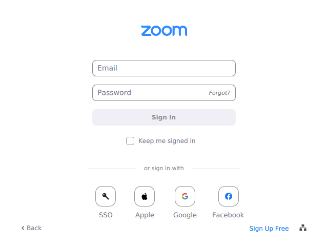
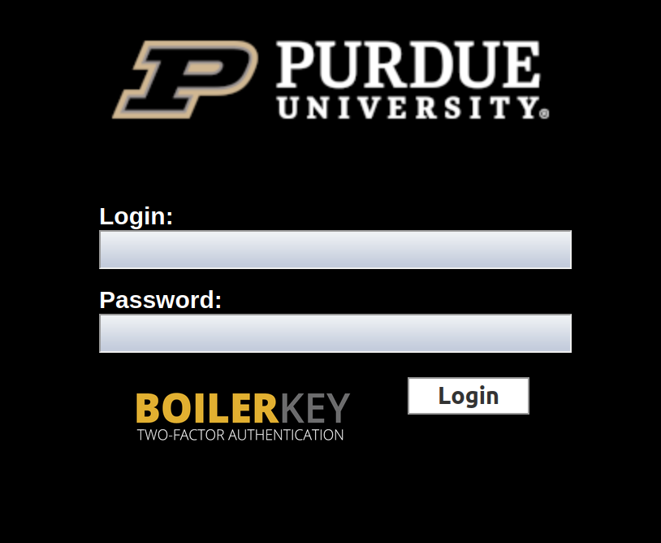
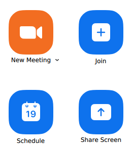
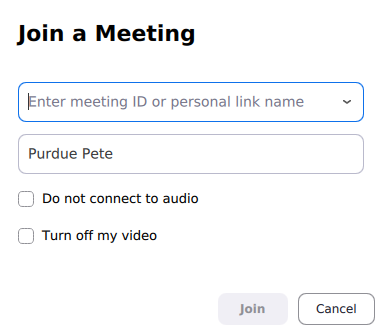

Help Sessions#
Note
In-person help sessions are in WALC B074 on Wednesday, 4:30-7:20 PM and in WALC 1087 on Thursday, 4:30-7:20 PM.
Virtual help sessions are held via Zoom at https://purdue-edu.zoom.us/j/97859063838, starting January 21st.
All times are in eastern daylight savings time (EDT).
Schedule#
Monday:#
TBD
Tuesday:#
TBD
Wednesday:#
TBD
Thursday:#
4:30 PM - 8:20 PM, in-person (WALC B074)
Friday:#
TBD
Saturday:#
TBD
Sunday:#
TBD
Table View:#
TBD
How to Join#
Note
Joining requires your Purdue provided Zoom account.
Open Zoom and select SSO (single sign-on) from the login screen. You may need to log out of your personal Zoom account before you can log in using your Purdue account.

Fig. 16 Select SSO from the Zoom login screen.#
Enter
purdue-eduwhen asked for a domain (note the hyphen,-, betweenpurdueandeduin the domain).
Fig. 17 Enter
purdue-eduas the domain.#Log in to Purdue through the pop-up login screen.

Fig. 18 Enter your Purdue credentials to log in.#
Back in Zoom, click the large blue Join button.

Fig. 19 Click the large blue Join button.#
In the pop-up window, enter meeting ID
978 5906 3838and click the Join at the bottom. Alternatively, you can click this link after you have signed in.
Fig. 20 Enter meeting ID
978 5906 3838and click the Join button.#
{kind=link}
{kind=link}
{kind=link}
{kind=link}